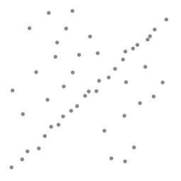
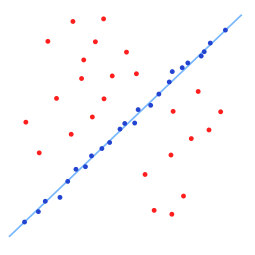

随机抽样一致
随机抽样一致算法（RANdom SAmple Consensus，RANSAC）。它采用迭代的方式从一组包含离群(outlier)的被观测数据中估算出数学模型的参数。 RANSAC是一个非确定性算法，在某种意义上说，它会产生一个在一定概率下合理的结果，而更多次的迭代会使这一概率增加。此RANSAC算法在1981年由Fischler和Bolles首次提出。
RANSAC的基本假设是
- “内群”(inlier)数据可以通过几组模型的参数来叙述其分布，而“离群”(outlier)数据则是不适合模型化的数据。
- 数据会受噪声影响，噪声指的是离群，例如从极端的噪声或错误解释有关数据的测量或不正确的假设。
- RANSAC假定，给定一组（通常很小）的内群，存在一个程序，这个程序可以估算最佳解释或最适用于这一数据模型的参数。
范例
这里用一个简单的例子来说明，在一组数据点中找到一条最适合的线。假设，此有一组集合包含了内群以及离群，其中内群为可以被拟合到线段上的点，而离群则是无法被拟合的点。如果我们用简单的最小二乘法来找此线，我们将无法得到一条适合于内群的线，因为最小二乘法会受离群影响而影响其结果。而RANSAC，可以只由内群来计算出模型，而且概率还够高。然而，RANSAC无法保证结果一定最好，所以必须小心选择参数，使其能有足够的概率。


设计
RANSAC算法是一个学习的技巧，通过使用观测数据的随机样本来估计模型参数。RANSAC使用投票机制来寻找优化的拟合结果。每个数据元被用来投票一或多个模型。投票机制基于两点假设：
噪音大的特征并不能一直单独为某个模型投票
有足够多的特征来拟合一个好的模型
一般RANSAC算法由两步骤迭代计算：
一个样本子集，包含数据选取（随机选取）。通过使用这些数据得到一个拟合模型和相关的模型参数。样本子集的数量是最小充分的得到模型参数。
算法检查数据集中的哪些元素是一直在第一步估计到的模型当中的。如果在阈值（相对噪声的最大偏离度）外的话，该模型元素不能拟合估计到的模型便会被当做outlier。
inliers的设置称作“一致性设置”RANSAC算法会一直迭代直到获得足够的inliers。
RANSAC的输入是一些观测数据和一些“可信度”参数，实现步骤：
- 随机选择一些原始数据，叫作假设inliers子集
- 建立模型拟合
- 用其他数据来验证，根据模型特定的loss-function来计算是否符合该模型
- 如果足够的点都算是“一致性”设置里则该模型算是好模型
- 比较所有的“一致性”设置（就是建立的所有模型）看看哪个inliers多就是我们要的。
参数决定
假设每个点是真正内群的几率是 $w$ :
$$ w = 真正內群的數目 / 數據總共的數量$$
通常我们不知道 $w$ 是多少, $w^n$ 是所选择的n个点都是内群的几率, $1-w^n$ 是所选择的n个点至少有一个不是内群的几率, $(1 − w^n)^k$ 是表示重复k次都没有全部的n个点都是内群的几率, 这边定算法跑k次以后成功的几率是p，那么,
$$ 1 − p =(1 − w^n)^k $$
$$ p = 1 −(1 − w^n)^k $$
所以如果希望成功几率高，p = 0.99, 当n不变时，k越大,p越大, 当w不变时，n越大，所需的k就越大, 通常w未知，所以n选小一点比较好。
应用
RANSAC常被用在计算机视觉，例如，对应点问题和 估算立体摄影机双眼相对点的基本矩阵。
参考链接
- 随机抽样一致RANSAC: Random Sample Consensus,by 江知季.
- 随机抽样一致,by wikipedia.